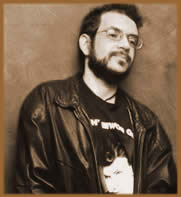

Se
até o momento o Legião Urbana vinha alternando discos
que abordavam a ética pública com os que tratavam
sobre a esfera privada, era de se esperar que viesse com uma forte
carga Punk. Porém, após o introspectivo Quatro
Estações, os músicos optaram por algo
ainda mais melancólico. Renato chegaria a falar: "Bonfá
me traz umas melodias dessas e eu que levo fama de ser deprê".
Acabou sendo o disco que Marcelo e Renato mais gostaram. Era ao
mesmo tempo conceitual, político e pessoal. Propositalmente
lento, foi concebido para causar estranheza. O poeta pretendia
escrever letras que não fossem perenes, fossem atemporais
como versos de Pessoa ou Drummond. Metal Contra as Nuvens
era uma das melhores letras de Renato. Tratava desde Fernando
Collor (Quase acreditei em suas promessas) ao homossexualismo
e Aids (É a verdade o que assombra / O descaso o que
condena / A estupidez o que destrói). Foi o disco
mais erudito também. Citações de escritores
como o português Nuno Fernandes Torneol, do século
XIII, e o alemão Johann Pachelbel, do século XVII,
estavam lá. Tinha também a música O Mundo
Anda Tão Complicado, tema de vários amores
pelo Brasil afora, que se tornou a mais pedida em shows. Sem esquecer
do Vento no Litoral (O plano era ficarmos bem).
Em agosto de 1992, o grupo voltou para a estrada.
As letras permitiram que os shows ficassem ainda mais míticos.
Mas o clima na banda não era dos melhores. Novamente, Renato
entrava numa fase perigosa, alertaria Dado. A convivência
foi se tornando exaustiva. Renato, já sabendo que era soro
positivo, continuava usando drogas e bebendo. Junto com a hora
do show, chegava a ressaca. Não raro, se assustava tanto
com os efeitos do porre que achava que iria morrer. Renato, que
desprezava os aplausos da mídia e dos fãs enquanto
o astro se auto destruía (como James Joplin, Kurt Cobain
e Jimmy Hendrix), flertava perigosamente com a morte. Certa manhã,
chegou à piscina do hotel onde estavam hospedados no Rio
Grande do Norte e perguntou por Dado e Bonfá. Fez um escândalo
quando soube que ambos haviam saído para conhecer as praias
com suas famílias. "Só eu que me interesso
pelo trabalho? Então vamos embora". E foi encerrada
a turnê. Na volta, Renato decidiu se cuidar. Pensava em
si mesmo e na imagem que iria deixar para o filho Giuliano.
Passou a tomar AZT, para retardar o aparecimento
dos sintomas da doença. Os efeitos colaterais descreveria
como "um cachorro vivo que vai me comendo por dentro".
Freqüentou as reuniões dos Alcoólicos Anônimos.
Passou três meses internado em uma clínica para toxicômanos.
Este tipo de tratamento demonstrava uma grande humildade, elogiaria
Rafael. Os trabalhos musicais seguintes não tiveram uma
boa recepção do público. Tanto Descobrimento
do Brasil (1993), quanto The Stonewall Celebration Concert
(1994), seu primeiro disco solo, ficaram no ostracismo.
A depressão voltava a assombrá-lo.
Contudo, trabalhava como um louco. Os demais integrantes da banda
já haviam percebido que o macete era mantê-lo ocupado,
Renato também.
Na noite de 14 de janeiro de 1995, a Legião
se apresentava em uma danceteria de Santos, quando uma lata de
cerveja acertou o vocalista. Renato passou então 45 minutos
cantando deitado no chão do palco. A platéia só
o via quando levantava o braço para olhar o relógio
de pulso e ver que horas eram. A temperatura esquentou. Quando
aquilo acabou, todos estavam convictos de que nunca mais haveria
um show do Legião Urbana.
Em meados de 1995, Renato, que tinha ido à
Itália colher material para o seu novo disco solo, voltou
a ficar depressivo e a se apoiar na bebida. Porém, começou
a gravar o álbum. Havia dias em que ele apenas passava
pelo estúdio, dava as coordenadas e ia embora. Contraditoriamente,
o disco foi o mais tranqüilo já produzido até
então. Todo em italiano, tinha um título que autobiografava
o momento do cantor: Equilíbrio Distante. A Aids
aos poucos avançava e Renato, que lia muito sobre o assunto,
tinha plena consciência do que estava lhe acontecendo.
 Em
janeiro de 1996, a Legião Urbana voltava ao estúdio
para registrar aquele que seria seu último disco, ou melhor,
seus últimos discos. O material produzido era suficiente
para dois CDs. Surgia assim A Tempestade e Outra
Estação. Letras como A Via Láctea
e Clarisse expunham de forma inédita a vida do
autor. Havia dúvidas de até onde deveriam ir. Por
isso, em respeito aos fãs, algumas músicas ficaram
de fora. Renato, na verdade, não tinha condições
de estar freqüentemente nas gravações, mas
acompanhava o processo por telefone. Já estava muito magro
e sem forças. Registrou quase tudo de primeira em gravações
comoventes. Quando cantou "Hoje a tristeza não
é passageira / Hoje fiquei com febre a tarde inteira",
não usava metáforas.
Em
janeiro de 1996, a Legião Urbana voltava ao estúdio
para registrar aquele que seria seu último disco, ou melhor,
seus últimos discos. O material produzido era suficiente
para dois CDs. Surgia assim A Tempestade e Outra
Estação. Letras como A Via Láctea
e Clarisse expunham de forma inédita a vida do
autor. Havia dúvidas de até onde deveriam ir. Por
isso, em respeito aos fãs, algumas músicas ficaram
de fora. Renato, na verdade, não tinha condições
de estar freqüentemente nas gravações, mas
acompanhava o processo por telefone. Já estava muito magro
e sem forças. Registrou quase tudo de primeira em gravações
comoventes. Quando cantou "Hoje a tristeza não
é passageira / Hoje fiquei com febre a tarde inteira",
não usava metáforas.
Diante de tudo, apenas fica a dúvida, se
podemos considerar Renato Russo um gótico obscuro dos anos
90 ou simplesmente uma alma melancólica, buscando alcançar
o que, talvez, nunca soube ao certo. Mas isso, só ele poderia
nos dizer...
Extraído
de JB Online
Adaptado por Spectrum